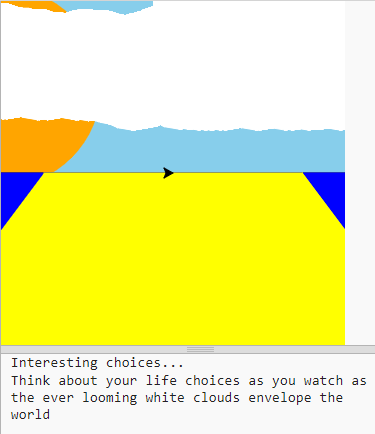
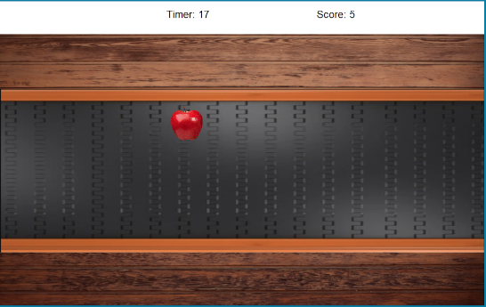
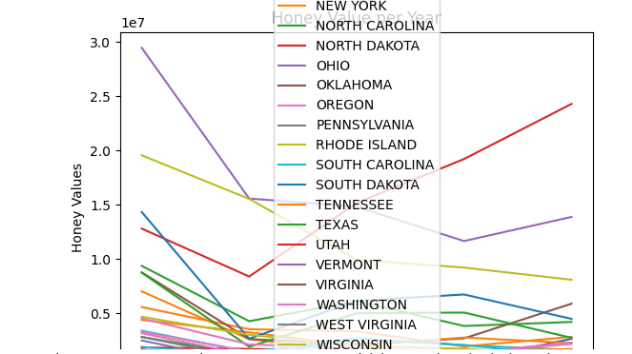
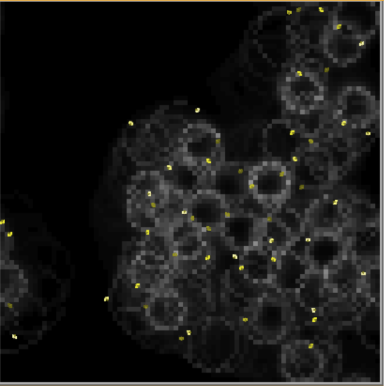
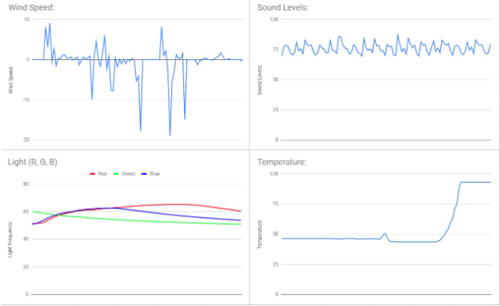

<<<<<<< HEAD
Portfolio
Home
Portfolio
About Me
This is my Portfolio Page!
1.1.9 project "Clouds". A game where you are given 3 random people and you have to choose between them on which one you would either marry, date, or sell your dog for. After you submit your answers, a pictures of clouds begin to form.

1.2.5 project "Apple Sorter". Try and click the most red apples in the given 30 seconds and try to earn a spot on the leaderboard!

Scratch Project Hoppy Minion. Use the minion and go through the obstacle while collecting bananas as fast as you can!
3.2.4 Honey Data, The way that the data was processed and visualizations help gain insight into the state of bee colonies in the US is to clean the data and input states

Honeycomb Simulation: The model is simulating how fast a certain number of bees can create honeycomb and how the enviorment and type of bees can affect the model. Weather can affect the amount of pollen produced and the pattern of the honeycomb.

3.1.6 Project: The rover has landed in rocky mountains because the air deflates quickly and the temp increases and decreases. The rover landed in the rocky mountains and the plan of the rover and the biomes because you would take an average of where the biomes are plan out the graphs and then collect the data of where the rover is creating data of the biome.
